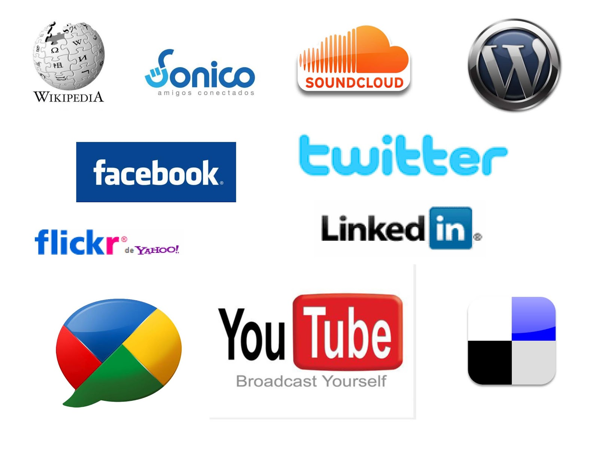

Linea del tiempo de los eventos más representativos en la historia del internet
2005/2006 - FUTURO DE LAS REDES
En 2005–2006 la web se volvió social y multimedia: auge de YouTube, Facebook y Twitter, y el impulso a la computación en la nube.
